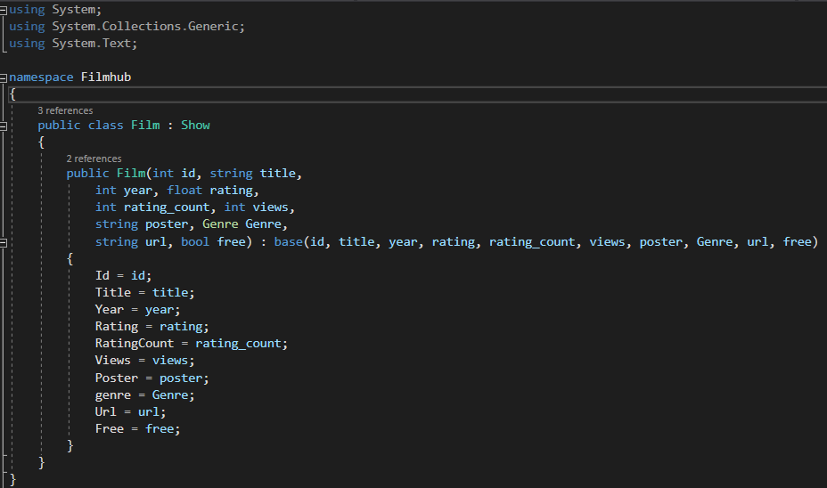

Тема, мета і постановка задачі
Тема: УСПАДКУВАННЯ. АБСТАКТНІ КЛАСИ. ІНТЕРФЕЙСИ.
Мета: придбати практичні навички роботи створення базового та похідних класів, перевизначення методів у класі, методів перевантаження унарних, бінарних, логічних операторів, операторів порівняння.
Постановка задачі:
- Доповнити програмну реалізацію класами-наслідниками, абстрактними класами, інтефейсами.
- Протестувати програму. Зробити висновки.
UML-діаграма

Файлова структура
Базові і похідні класи
Базові класи
Похідні класи
Абстрактні класи, абстрактні та віртуальні методи
Upcasting і downcasting

Інтерфейси
Результат роботи
Посилання на проект
https://github.com/UniversityTeam/filmhub-netВиконуваний файл
ЗавантажитиВисновки
Основною метою лабораторної роботи було вивчення та реалізація наслідування, up/down-casting та абстракрактних класів. Завдяки цьому ми можемо прописувати абстрактну сутність з загальними даними, від якої далі будемо утворювати нові класи.